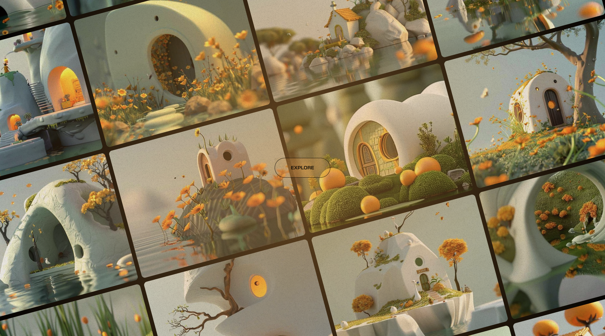
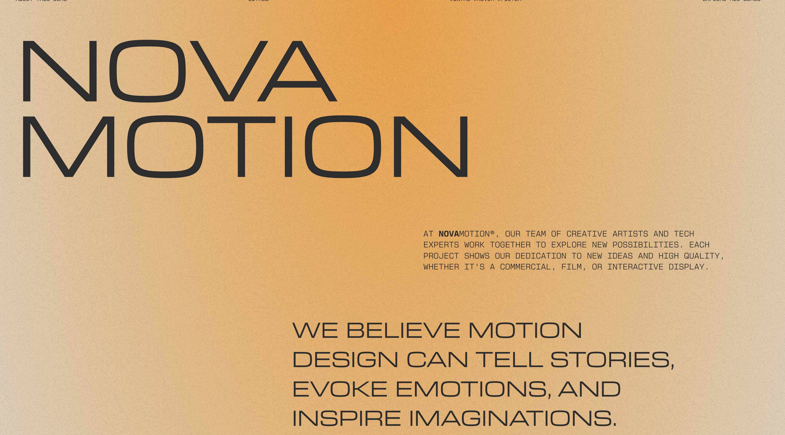

← Back to Work
// Interactive Web Experience
IntroGrid Motion Transition
An interactive grid-based motion experience showcasing fluid page transitions, animated layouts, and modern UI interactions designed to deliver an engaging visual experience.


Project Overview
Intro Grid Motion Transition is an interactive web experience that showcases dynamic grid-based animations and smooth page transitions. The project combines modern motion design with immersive interactions, creating an engaging landing page where visual elements respond seamlessly to user navigation and input.
Key Features
- Interactive grid layout with immersive motion transitions.
- Smooth image expansion and page reveal animations.
- Fluid hover interactions with responsive visual feedback.
- Modern landing page design with minimal user interface.
- Seamless navigation between sections using animated transitions.
- Responsive experience optimized for desktop and modern browsers.
Technical Highlights
- Built using modern JavaScript animation techniques.
- CSS transforms and transitions for GPU-accelerated animations.
- Grid-based layout for flexible and responsive positioning.
- Optimized rendering using requestAnimationFrame.
- Smooth animation sequencing with timeline-based motion.
- Performance-focused implementation for fluid interactions.